入门：https://www.cnblogs.com/edisonchou/p/5437205.html https://www.cnblogs.com/edisonchou/p/5447812.html https://www.cnblogs.com/edisonchou/p/5467573.html
入门 本篇作为入门，介绍了单元测试的基础知识，例如：如何使用一个测试框架，基本的自动化测试属性等等，还有对应的三种测试类型。
单元测试基础 什么是单元测试 一个单元测试是一段自动化的代码 ，这段代码调用被测试的工作单元 ，之后对这个单元的单个最终结果的某些假设进行检验。
与集成测试的区别
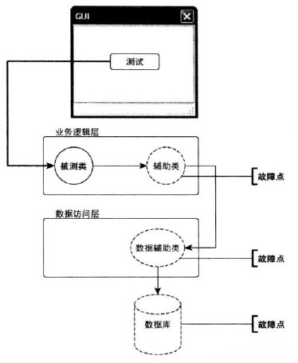
集成测试是对一个工作单元进行的测试，这个测试对被测试的工作单元没有完全的控制，并使用该单元的一个或多个真实依赖物，例如时间、网络、数据库、线程或随机数产生器等。
总的来说，集成测试会使用真实依赖物，而单元测试则把被测试单元和其依赖物隔离开，以保证单元测试结果高度稳定 ，还可以轻易控制和模拟被测试单元行为的任何方面。
测试驱动开发基础 传统的单元测试流程
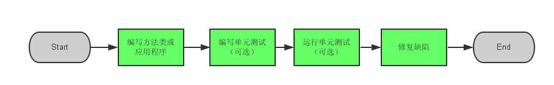
测试驱动开发的概要流程
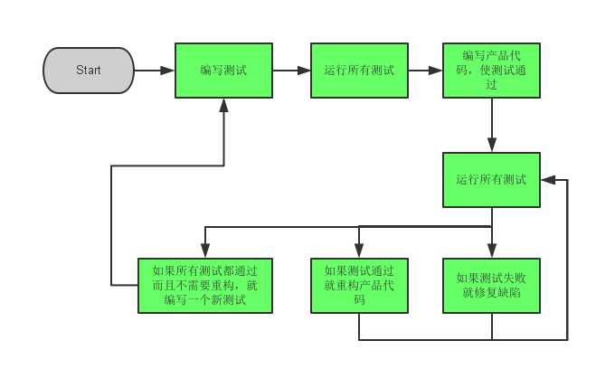
如上图所示，TDD 和传统开发方式不同，我们首先会编写一个会失败的测试，然后创建产品代码，并确保这个测试通过，接下来就是重构代码或者创建另一个会失败的测试。
第一个单元测试 NUnit 单元测试框架 NUnit 是从流行的 Java 单元测试框架 JUnit 直接移植过来的，之后 NUnit 在设计和可用性上做了极大地改进，和 JUnit 有了很大的区别，给日新月异的测试框架生态系统注入了新的活力。
作为一名 .NET 程序员，如何在 VS 中安装 NUnit 并能够在 VS 中直接运行测试呢？
Step1.
Step2.
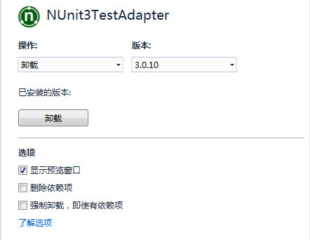
LogAn 项目介绍 LogAn（Log And Notificaition）
在本次的单元测试实践中，我们会一步一步编写测试来验证 LogAn 的解析、事件识别以及通知功能。首先，我们需要了解使用 NUnit 来编写单元测试。
编写第一个测试 （1）我们的测试从以下这个 LogAnalyzer 类开始，这个类暂时只有一个方法 IsValidLogFileName：
1 2 3 4 5 6 7 8 9 10 11 public class LogAnalyzer { public bool IsValidLogFileName (string fileName if (fileName.EndsWith(".SLF" )) { return false ; } return true ; } }
这个方法检查文件扩展名，据此判断一个文件是不是有效的日志文件。!运算符，因此这个方法就包含了一个 Bug —— 当文件名以 .SLF 结尾时会返回 false，而不是返回 true。这样，我们就能看到测试失败时在测试运行期中显示什么内容。
（2）新建一个类库项目，命名为 Manulife.LogAn.UnitTests（被测试项目项目名为 Manulife.LogAn.Lib）。添加一个类，取名为 LogAnalyzerTests.cs。
（3）在 LogAnalyzerTests 类中新增一个测试方法，取名为 IsValidFileName_BadExtension_ReturnsFalse()。
首先，我们要明确如何编写测试代码，一般来说，一个单元测试通常包含三个行为：
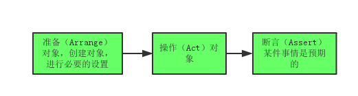
因此，根据以上三个行为，我们可以编写出以下的测试方法：（其中断言部分使用了 NUnit 框架提供的Assert类）
1 2 3 4 5 6 7 8 9 10 11 [TestFixture ] public class LogAnalyzerTests { [Test ] public void IsValidFileName_BadExtension_ReturnsFalse ( LogAnalyzer analyzer = new LogAnalyzer(); bool result = analyzer.IsValidLogFileName("filewithbadextension.foo" ); Assert.AreEqual(false , result); } }
其中，属性[TestFixture]和[Test]是 NUnit 的特有属性，NUnit 用属性机制来识别和加载测试。这些属性就像一本书里的书签，帮助测试框架识别记载程序集里面的重要部分，以及哪些部分是需要调用的测试。
[TestFixture]加载一个类上，标识这个类是一个包含自动化 NUnit 测试的类；[Test]加在一个方法上，标识这个方法是一个需要调用的自动化测试；
另外，再说一下测试方法名称的规范，一般包含三个部分：[UnitOfWorkName]_[ScenarioUnderTest]_[ExpectedBehavior]
UnitOfWorkName：被测试的方法、一组方法或者一组类Scenario：测试进行的假设条件，例如“登入失败”，“无效用户”或“密码正确”等ExpectedBehavior：在测试场景指定的条件下，你对被测试方法行为的预期
运行第一个测试 （1）编写好测试代码之后，点击 “测试” -> “运行” -> “所有测试”
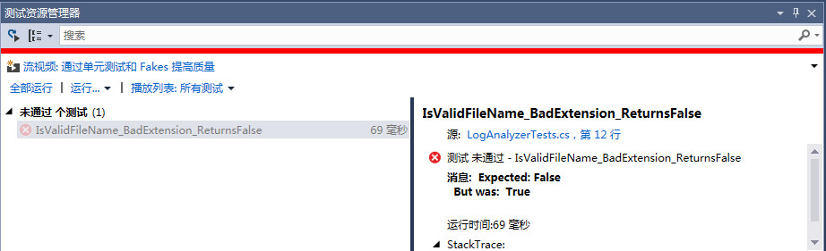
从上图可以看出，我们得测试方法并没有通过，我们期望（Expected）的结果是 False，而实际（Actual）的结果却是 True。
继续添加测试方法 （1）通常在进行单元测试时我们会考虑到代码覆盖率，点击 “测试” -> “分析代码覆盖率” -> “所有测试”，你可以看到以下结果：80%
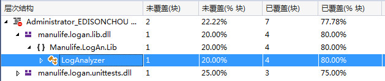
（2）这时，我们需要想出完善的测试策略来覆盖所有的情况，因此我们添加一些测试方法来提高我们的代码覆盖率。这里我们添加两个方法，一个测试大写文件扩展名，一个测试小写文件扩展名：
1 2 3 4 5 6 7 8 9 10 11 12 13 14 15 [Test ] public void IsValidFileName_GoodExtensionLowercase_ReturnsTrue ( LogAnalyzer analyzer = new LogAnalyzer(); bool result = analyzer.IsValidLogFileName("filewithgoodextension.slf" ); Assert.AreEqual(true , result); } [Test ] public void IsValidFileName_GoodExtensionUppercase_ReturnsTrue ( LogAnalyzer analyzer = new LogAnalyzer(); bool result = analyzer.IsValidLogFileName("filewithgoodextension.SLF" ); Assert.AreEqual(true , result); }
这时测试结果如下图所示：
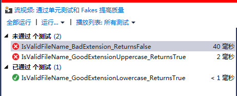
这时再来看看代码覆盖率：100%
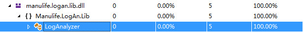
（3）为了让所有的测试都能通过，这时我们需要修改源代码，改用大小写不敏感的字符串匹配：
1 2 3 4 5 6 7 8 public bool IsValidLogFileName (string fileName if (!fileName.EndsWith(".SLF" , StringComparison.CurrentCultureIgnoreCase)) { return false ; } return true ; }
这时，我们再来运行一下所有的测试（也可以选择 运行未通过的测试）来看下由红到绿的快感。单元测试的理念很简单：只有所有的测试都通过，继续前行的绿灯才会亮起。哪怕只有一个测试失败了，进度条上都会亮起红灯，显示你的系统（或者测试）出现了问题。
更多的 NUnit 参数化重构单元测试 NUnit中有个叫做 参数化测试（Parameterized Tests）的功能，我们可以借助[TestCase]标签特性来重构我们的单元测试：
1 2 3 4 5 6 7 8 [TestCase("filewithgoodextension.slf" ) ] [TestCase("filewithgoodextension.SLF" ) ] public void IsValidFileName_ValidExtensions_ReturnsTrue (string fileName LogAnalyzer analyzer = new LogAnalyzer(); bool result = analyzer.IsValidLogFileName(fileName); Assert.AreEqual(true , result); }
可以看到，借助 TestCase 特性，测试数目没有改变，但是测试代码却变得更易维护，更加易读。
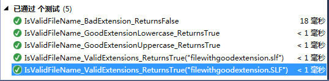
SetUp 和 TearDown NUnit 还有一些特别的标签特性，可以很方便地控制测试前后的设置和清理状态工作，他们就是[SetUp]和[TearDown]。
[SetUp] 这个标签加在一个方法上，NUnit 每次在运行测试类里的任何一个测试时都会先运行这个 setup 方法；[TearDown] 这个标签标识一个方法应该在测试类里的每个测试运行完成之后执行。
1 2 3 4 5 6 7 8 9 10 11 12 13 14 15 16 17 18 19 20 21 22 23 24 25 26 27 28 29 30 [TestFixture ] public class LogAnalyzerTests { private LogAnalyzer analyzer = null ; [SetUp ] public void Setup ( analyzer = new LogAnalyzer(); } [Test ] public void IsValidFileName_ValidFileLowerCased_ReturnsTrue ( bool result = analyzer.IsValidLogFileName("whatever.slf" ); Assert.IsTrue(result, "filename should be valid!" ); } [Test ] public void IsValidFileName_ValidFileUpperCased_ReturnsTrue ( bool result = analyzer.IsValidLogFileName("whatever.SLF" ); Assert.IsTrue(result, "filename should be valid!" ); } [TearDown ] public void TearDown ( analyzer = null ; } }
我们可以把 setup 和 teardown 方法想象成测试类中测试的构造函数和析构函数，在每个测试类中只能有一个 setup 和 teardown 方法，这两个方法对测试类中的每个方法只执行一次。
不过，使用[Setup]越多，测试代码可读性就越差。原书作者推荐采用工厂方法（Factory Method）初始化被测试的实例。
1 2 3 4 5 6 7 8 9 private static LogAnalyzer MakeAnalyzer ( return new LogAnalyzer(); }
在测试方法中可以直接使用：
1 2 3 4 5 6 7 [Test ] public void IsValidFileName_BadExtension_ReturnsFalse ( LogAnalyzer analyzer = MakeAnalyzer(); bool result = analyzer.IsValidLogFileName("filewithbadextension.foo" ); Assert.AreEqual(false , result); }
检验预期的异常 很多时候，我们的方法中会抛出一些异常，这时如果我们的测试也应该做一些修改。在 NUnit 中，提供了一个 API：Assert.Catch<T>(delegate)。
首先，我们修改一下被测试的方法，增加一行判断文件名是否为空的代码：
1 2 3 4 5 6 7 8 9 10 11 12 13 public bool IsValidLogFileName (string fileName if (string .IsNullOrEmpty(fileName)) { throw new ArgumentException("filename has to be provided" ); } if (!fileName.EndsWith(".SLF" , StringComparison.CurrentCultureIgnoreCase)) { return false ; } return true ; }
然后，我们新增一个测试方法，使用Assert.Catch来检测异常是否一致：
1 2 3 4 5 6 7 8 9 [Test ] public void IsValidFileName_EmptyName_Throws ( LogAnalyzer analyzer = new LogAnalyzer(); var ex = Assert.Catch<Exception>(() => analyzer.IsValidLogFileName(string .Empty)); StringAssert.Contains("filename has to be provided" , ex.Message); }
忽略测试 有时候测试代码有问题，但是我们又需要把代码签入到主代码树中。在这种罕见的情况下（虽然确实非常少），可以给那些测试代码自身有问题的测试加一个[Ignore]标签特性。
1 2 3 4 5 6 [Test ] [Ignore("there is a problem with this test!" ) ] public void IsValidFileName_ValidFile_ReturnsTrue ( }
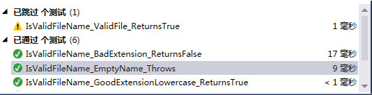
设置测试的类别 我们可以把测试按照指定的测试类别运行，使用[Category]标签特性就可以实现这个功能：
1 2 3 4 5 6 7 8 [Test ] [Category("Fast Tests" ) ] public void IsValidFileName_BadExtension_ReturnsFalse ( LogAnalyzer analyzer = new LogAnalyzer(); bool result = analyzer.IsValidLogFileName("filewithbadextension.foo" ); Assert.AreEqual(false , result); }
测试系统状态的改变 此前我们得测试都有返回值，而很多要测试的方法都没有返回值，而只是改变对象中的某些状态，我们又该如何测试呢？
首先，我们修改 IsValidLogFileName 方法，增加一个状态属性：
1 2 3 4 5 6 7 8 9 10 11 12 13 14 15 16 17 18 19 20 21 22 23 24 public class LogAnalyzer { public bool WasLastFileNameValid { get ; set ; } public bool IsValidLogFileName (string fileName WasLastFileNameValid = false ; if (string .IsNullOrEmpty(fileName)) { throw new ArgumentException("filename has to be provided" ); } if (!fileName.EndsWith(".SLF" , StringComparison.CurrentCultureIgnoreCase)) { return false ; } WasLastFileNameValid = true ; return true ; } }
其次，我们编写一个测试，对系统状态进行断言：
1 2 3 4 5 6 7 8 [TestCase("badfile.foo" , false) ] [TestCase("goodfile.slf" , true) ] public void IsValidFileName_WhenCalled_ChangesWasLastFileNameValid (string fileName, bool expected LogAnalyzer analyzer = new LogAnalyzer(); analyzer.IsValidLogFileName(fileName); Assert.AreEqual(expected, analyzer.WasLastFileNameValid); }
小结 这一篇作为入门，带领大家领略了一下单元测试的概念，如何编写单元测试，如何在 VS 中应用 NUnit 进行单元测试。相信大家以前都用过 MSTest，而我们这里却使用了 NUnit。所以，下面我们来总结一下 MSTest 与 NUnit 在特性标签上的一些区别：
MS Test Attribute
NUnit Attribute
用途
[TestClass][TestFixture]定义一个测试类，里面可以包含很多测试函数和初始化、销毁函数（以下所有标签和其他断言）。
[TestMethod][Test]定义一个独立的测试函数。
[ClassInitialize][TestFixtureSetUp]定义一个测试类初始化函数，每当运行测试类中的一个或多个测试函数时，这个函数将会在测试函数被调用前被调用一次（在第一个测试函数运行前会被调用）。
[ClassCleanup][TestFixtureTearDown]定义一个测试类销毁函数，每当测试类中的选中的测试函数全部运行结束后运行（在最后一个测试函数运行结束后运行）。
[TestInitialize][SetUp]定义测试函数初始化函数，每个测试函数运行前都会被调用一次。
[TestCleanup][TearDown]定义测试函数销毁函数，每个测试函数执行完后都会被调用一次。
[AssemblyInitialize]–
定义测试 Assembly 初始化函数，每当这个 Assembly 中的有测试函数被运行前，会被调用一次（在 Assembly 中第一个测试函数运行前会被调用）。
[AssemblyCleanup]–
定义测试 Assembly 销毁函数，当 Assembly 中所有测试函数运行结束后，运行一次。（在 Assembly 中所有测试函数运行结束后被调用）
[DescriptionAttribute][Category]定义标识分组。
目前为止，我们的单元测试都还很简单也还比较顺利。但是，如果我们要测试的方法依赖于一个外部资源，如文件系统、数据库、Web 服务或者其他难以控制的东西，那又该如何编写测试呢？为了解决这些问题，我们需要创建测试存根 、伪对象 及模拟对象 ，下一篇核心技术将会介绍这些内容，让我们跟随 Roy Osherove 的《单元测试的艺术》一起去探寻吧。
参考资料 （1）Roy Osherove 著，金迎 译，《单元测试的艺术（第2版）》
核心技术 上一篇我们学习基本的单元测试基础知识和入门实例。但是，如果我们要测试的方法依赖于一个外部资源，如文件系统、数据库、Web 服务或者其他难以控制的东西，那又该如何编写测试呢？为了解决这些问题，我们需要创建测试存根 、伪对象 及模拟对象 。这一篇中我们会开始接触这些核心技术，借助存根破除依赖，使用模拟对象进行交互测试，使用隔离框架支持适应未来和可用性的功能。
破除依赖-存根 为何使用存根？ 当我们要测试的对象依赖另一个你无法控制（或者还未实现）的对象，这个对象可能是 Web 服务、系统时间、线程调度或者很多其他东西。存根 。
存根简介 （1）外部依赖项
一个外部依赖项是系统中的一个对象，被测试代码与这个对象发生交互，但你不能控制这个对象。（常见的外部依赖项包括：文件系统、线程、内存以及时间等）
（2）存根
一个存根（Stub ）是对系统中存在的一个依赖项（或者协作者）的可控制的替代物。通过使用存根，你在测试代码时无需直接处理这个依赖项。
发现项目中的外部依赖 继续上一篇中的 LogAn 案例，假设我们的 IsValidLogFilename 方法会首先读取配置文件，如果配置文件说支持这个扩展名，就返回 true：
1 2 3 4 5 public bool IsValidLogFileName (string fileName }
那么问题来了：一旦测试依赖于文件系统，我们进行的就是集成测试，会带来所有与集成测试相关的问题—运行速度较慢，需要配置，一次测试多个内容等。
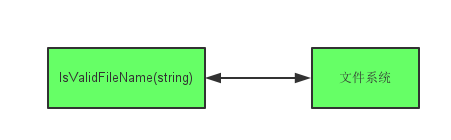
换句话说，尽管代码本身的逻辑是完全正确的，但是这种依赖可能导致测试失败。
避免项目中的直接依赖 想要破除直接依赖，可以参考以下两个步骤：外部接口 或者 API；底层实现 替换成你能控制的东西；
对于我们的 LogAn 项目，我们要做到替代实例不会访问文件系统，这样便破除了文件系统的依赖性。因此，我们可以引入一个间接层来避免对文件系统的直接依赖。访问文件系统的代码被隔离在一个 FileExtensionManager 类中，这个类之后将会被一个存根类替代，如下图所示：
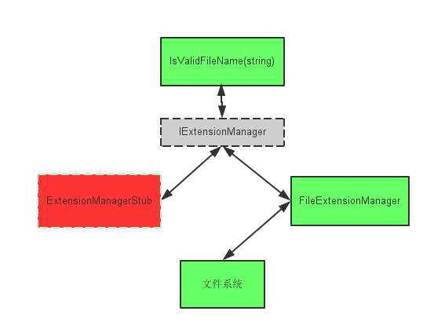
在上图中，我们引入了存根 ExtensionManagerStub 破除依赖，现在我们得代码不应该知道也不会关心它使用的扩展管理器的内部实现。
重构代码提高可测试性 有两类打破依赖的重构方法，二者相互依赖 ，他们被称为 A 型和 B 型重构。
（1）A 型 把具体类抽象成接口或委托；
Step1.
1 2 3 4 5 public bool IsValidLogFileName (string fileName FileExtensionManager manager = new FileExtensionManager(); return manager.IsValid(fileName); }
② 定义抽取出的类
1 2 3 4 5 6 7 8 9 10 public class FileExtensionManager : IExtensionManager { public bool IsValid (string fileName bool result = false ; return result; } }
Step2.
1 2 3 4 public interface IExtensionManager { bool IsValid (string fileName }
Step3.
1 2 3 4 5 6 7 public class AlwaysValidFakeExtensionManager : IExtensionManager { public bool IsValid (string fileName return true ; } }
于是，IsValidLogFileName 方法就可以进行重构了：
1 2 3 4 5 public bool IsValidLogFileName (string fileName IExtensionManager manager = new FileExtensionManager(); return manager.IsValid(fileName); }
但是，这里被测试方法还是对具体类进行直接调用 ，我们必须想办法让测试方法调用伪对象而不是 IExtensionManager 的原本实现，于是我们想到了 DI （依赖注入），这时就需要 B 型重构。
（2）B 型 重构代码，从而能够对其注入这种委托和接口的伪实现。
① 通过构造函数注入伪对象
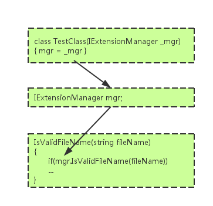
根据上图所示的流程，我们可以重构LogAnalyzer代码：
1 2 3 4 5 6 7 8 9 10 11 12 13 14 public class LogAnalyzer { private IExtensionManager manager; public LogAnalyzer (IExtensionManager manager ) this .manager = manager; } public bool IsValidLogFileName (string fileName return manager.IsValid(fileName); } }
其次，再添加新的测试代码：
1 2 3 4 5 6 7 8 9 10 11 12 13 14 15 16 17 18 19 20 21 22 23 24 25 26 [TestFixture ] public class LogAnalyzerTests { [Test ] public void IsValidFileName_NameSupportExtension_ReturnsTrue ( FakeExtensionManager myFakeManager = new FakeExtensionManager(); myFakeManager.WillBeValid = true ; LogAnalyzer analyzer = new LogAnalyzer(myFakeManager); bool result = analyzer.IsValidLogFileName("short.ext" ); Assert.AreEqual(true , result); } internal class FakeExtensionManager : IExtensionManager { public bool WillBeValid = false ; public bool IsValid (string fileName return WillBeValid; } } }
Note： 这里将伪存根类和测试代码放在一个文件里，因为目前这个伪对象只在这个测试类内部使用。它比起手工实现的伪对象和测试代码放在不同文件中，将它们放在一个文件里的话，定位、阅读以及维护代码都要容易的多。
② 通过属性设置注入伪对象
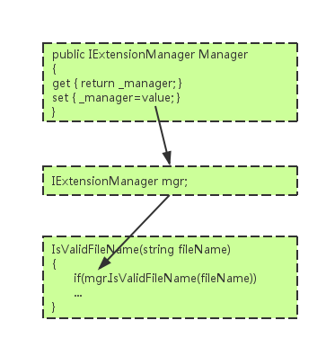
根据上图所示的流程，我们可以重构LogAnalyzer类：
1 2 3 4 5 6 7 8 9 10 11 12 13 14 15 16 17 18 19 20 21 22 23 24 25 26 27 28 public class LogAnalyzer { private IExtensionManager manager; public IExtensionManager ExtensionManager { get { return manager; } set { manager = value ; } } public LogAnalyzer ( this .manager = new FileExtensionManager(); } public bool IsValidLogFileName (string fileName return manager.IsValid(fileName); } }
其次，新增一个测试方法，改为属性注入方式：
1 2 3 4 5 6 7 8 9 10 11 12 13 [Test ] public void IsValidFileName_SupportExtension_ReturnsTrue ( FakeExtensionManager myFakeManager = new FakeExtensionManager(); myFakeManager.WillBeValid = true ; LogAnalyzer log = new LogAnalyzer(); log.ExtensionManager = myFakeManager; bool result = log.IsValidLogFileName("short.ext" ); Assert.AreEqual(true , result); }
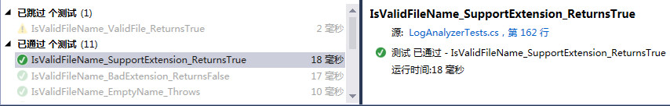
Note： 如果你想表明被测试类的某个依赖项是可选的，或者测试可以放心使用默认创建的这个依赖项实例，这时你就可以使用属性注入。
抽取和重写 抽取和重写是一项强大的技术，可直接替换依赖项，实现起来快速干净，可以让我们编写更少的接口、更多的虚函数。
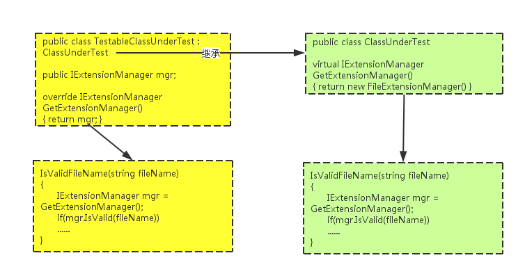
还是继续上面的例子，首先改造被测试类（位于 Manulife.LogAn），添加一个返回真实实例的虚工厂方法，正常在代码中使用工厂方法：
1 2 3 4 5 6 7 8 9 10 11 12 13 14 public class LogAnalyzerUsingFactoryMethod { public bool IsValidLogFileName (string fileName return GetManager().IsValid(fileName); } protected virtual IExtensionManager GetManager ( return new FileExtensionManager(); } }
其次，在改造测试项目（位于 Manulife.LogAn.UnitTests），创建一个新类，声明这个新类继承自被测试类，创建一个我们要替换的接口（IExtensionManager）类型的公共字段（不需要属性 get 和 set 方法）：
1 2 3 4 5 6 7 8 9 10 11 12 13 14 15 public class TestableLogAnalyzer : LogAnalyzerUsingFactoryMethod { public IExtensionManager manager; public TestableLogAnalyzer (IExtensionManager manager ) this .manager = manager; } protected override IExtensionManager GetManager ( return this .manager; } }
最后，改造测试代码，这里我们创建的是新派生类而非被测试类的实例，配置这个新实例的公共字段，设置成我们在测试中创建的存根实例 FakeExtensionManager：
1 2 3 4 5 6 7 8 9 10 11 [Test ] public void OverrideTest ( FakeExtensionManager stub = new FakeExtensionManager(); stub.WillBeValid = true ; TestableLogAnalyzer logan = new TestableLogAnalyzer(stub); bool result = logan.IsValidLogFileName("stubfile.ext" ); Assert.AreEqual(true , result); }
交互测试-模拟对象 工作单元可能有三种最终结果，目前为止，我们编写过的测试只针对前两种：返回值和改变系统状态。现在，我们来了解如何测试第三种最终结果 —— 调用第三方对象。
模拟对象与存根的区别 模拟对象和存根之间的区别很小，但二者之间的区别非常微妙，但又很重要。二者最根本的区别在于：
存根不会导致测试失败，而模拟对象可以。
下图展示了存根和模拟对象之间的区别，可以看到测试会使用模拟对象验证测试是否失败。
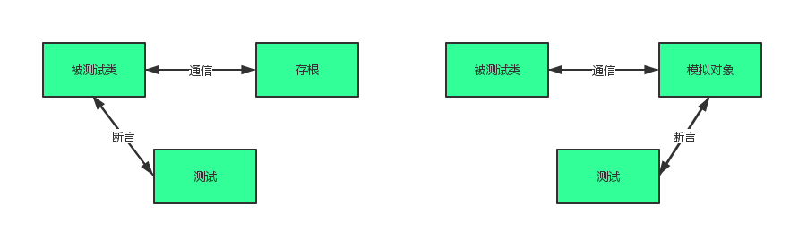
第一个手工模拟对象 创建和使用模拟对象的方法与使用存根类似，只是模拟对象比存根多做一件事：它保存通讯的历史记录，这些记录之后用于预期（Expection）验证。
假设我们的被测试项目 LogAnalyzer 需要和一个外部的 Web Service 交互，每次 LogAnalyzer 遇到一个过短的文件名，这个 Web Service 就会收到一个错误消息。遗憾的是，要测试的这个 Web Service 还没有完全实现。就算实现了，使用这个 Web Service 也会导致测试时间过长。
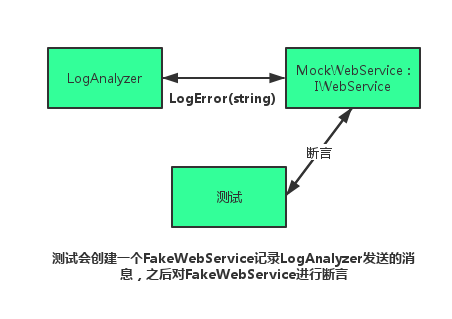
Step1.
1 2 3 4 5 6 7 8 9 10 11 12 13 public interface IWebService { void LogError (string message } public class FakeWebService : IWebService { public string LastError; public void LogError (string message this .LastError = message; } }
Step2.
1 2 3 4 5 6 7 8 9 10 11 12 13 14 15 16 17 18 public class LogAnalyzer { private IWebService service; public LogAnalyzer (IWebService service ) this .service = service; } public void Analyze (string fileName if (fileName.Length < 8 ) { service.LogError(string .Format("Filename too short : {0}" ,fileName)); } } }
Step3.
1 2 3 4 5 6 7 8 9 10 11 [Test ] public void Analyze_TooShortFileName_CallsWebService ( FakeWebService mockService = new FakeWebService(); LogAnalyzer log = new LogAnalyzer(mockService); string tooShortFileName = "abc.ext" ; log.Analyze(tooShortFileName); StringAssert.Contains("Filename too short : abc.ext" , mockService.LastError); }
可以看出，这里的测试代码中我们是对模拟对象进行断言，而非 LogAnalyzer 类，因为我们测试的是 LogAnalyzer 和 Web Service 之间的交互 。
同时使用模拟对象和存根 假设我们得 LogAnalyzer 不仅需要调用 Web Service，而且如果 Web Service 抛出一个错误，LogAnalyzer 还需要把这个错误记录在另一个外部依赖项里，即把错误用电子邮件发送给 Web Service 管理员，如下代码所示：
1 2 3 4 5 6 7 8 9 10 11 12 if (fileName.Length < 8 ){ try { service.LogError(string .Format("Filename too short : {0}" , fileName)); } catch (Exception ex) { email.SendEmail("a" , "subject" , ex.Message); } }
可以看出，这里 LogAnalyzer 有两个外部依赖项：Web Service 和电子邮件服务。我们看到这段代码只包含调用外部对象的逻辑，没有返回值，也没有系统状态的改变，那么我们如何测试当 Web Service 抛出异常时 LogAnalyzer 正确地调用了电子邮件服务呢？
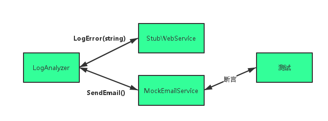
Step1.
1 2 3 4 5 6 7 8 9 10 11 12 13 14 15 16 17 18 19 20 21 22 23 24 25 26 public interface IEmailService { void SendEmail (EmailInfo emailInfo ) } public class EmailInfo { public string Body; public string To; public string Subject; public EmailInfo (string to, string subject, string body this .To = to; this .Subject = subject; this .Body = body; } public override bool Equals (object obj EmailInfo compared = obj as EmailInfo; return To == compared.To && Subject == compared.Subject && Body == compared.Body; } }
Step2. Equals方法
1 2 3 4 5 6 7 8 9 10 11 12 13 14 15 16 17 18 19 20 21 public class EmailInfo { public string Body; public string To; public string Subject; public EmailInfo (string to, string subject, string body this .To = to; this .Subject = subject; this .Body = body; } public override bool Equals (object obj EmailInfo compared = obj as EmailInfo; return To == compared.To && Subject == compared.Subject && Body == compared.Body; } }
Step3.
1 2 3 4 5 6 7 8 9 10 11 12 13 14 15 16 17 18 19 20 21 public class FakeEmailService : IEmailService { public EmailInfo email = null ; public void SendEmail (EmailInfo emailInfo ) this .email = emailInfo; } } public class FakeWebService : IWebService { public Exception ToThrow; public void LogError (string message if (ToThrow != null ) { throw ToThrow; } } }
Step4.
1 2 3 4 5 6 7 8 9 10 11 12 13 14 15 16 17 18 19 20 21 22 23 24 25 26 public class LogAnalyzer { private IWebService webService; private IEmailService emailService; public LogAnalyzer (IWebService webService, IEmailService emailService ) this .webService = webService; this .emailService = emailService; } public void Analyze (string fileName if (fileName.Length < 8 ) { try { webService.LogError(string .Format("Filename too short : {0}" , fileName)); } catch (Exception ex) { emailService.SendEmail(new EmailInfo("someone@qq.com" , "can't log" , ex.Message)); } } } }
Step5.
1 2 3 4 5 6 7 8 9 10 11 12 13 14 15 [Test ] public void Analyze_WebServiceThrows_SendsEmail ( FakeWebService stubService = new FakeWebService(); stubService.ToThrow = new Exception("fake exception" ); FakeEmailService mockEmail = new FakeEmailService(); LogAnalyzer log = new LogAnalyzer(stubService, mockEmail); string tooShortFileName = "abc.ext" ; log.Analyze(tooShortFileName); EmailInfo expectedEmail = new EmailInfo("someone@qq.com" , "can't log" , "fake exception" ); Assert.AreEqual(expectedEmail, mockEmail.email); }
总结：每个测试应该只测试一件事情，测试中应该也最多只有一个模拟对象 。一个测试只能指定工作单元三种最终结果中的一个，不然的话天下大乱。
隔离（模拟）框架 为何使用隔离框架 对于复杂的交互场景，可能手工编写模拟对象和存根就会变得很不方便，因此，我们可以借助隔离框架来帮我们在运行时自动生成存根和模拟对象。
一个隔离框架是一套可编程的 API ，使用这套 API 创建伪对象比手工编写容易得多，快得多，而且简洁得多。
隔离框架的主要功能就在于帮我们生成动态伪对象 ，动态伪对象是运行时创建的任何存根或者模拟对象，它的创建不需要手工编写代码（硬编码）。
关于 NSubstitute 隔离框架 Nsubstitute 是一个开源的框架，源码是 C# 实现的。你可以在这里获得它的源码：https://github.com/nsubstitute/NSubstitute Arrange-Act-Assert 测试模式，你只需要告诉它应该如何工作，然后断言你所期望接收到的请求，就大功告成了。因为你有更重要的代码要编写，而不是去考虑是需要一个 Mock 还是一个 Stub。
在 .NET 项目中，我们仍然可以通过 NuGet 来安装 NSubsititute：
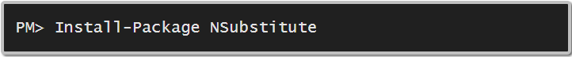
使用 NSubstitute 模拟对象 NSub 是一个受限框架，它最适合为接口创建伪对象。我们继续以前的例子，来看下面一段代码，它是一个手写的伪对象 FakeLogger，它会检查日志调用是否正确执行。此处我们没有使用隔离框架。
1 2 3 4 5 6 7 8 9 10 11 12 13 14 15 16 17 18 19 20 21 22 23 24 25 26 27 public interface ILogger { void LogError (string message } public class FakeLogger : ILogger { public string LastError; public void LogError (string message LastError = message; } } [Test ] public void Analyze_TooShortFileName_CallLogger ( FakeLogger logger = new FakeLogger(); MyLogAnalyzer analyzer = new Chapter5.MyLogAnalyzer(logger); analyzer.MinNameLength = 6 ; analyzer.Analyze("a.txt" ); StringAssert.Contains("too short" , logger.LastError); }
现在我们看看如何使用 NSub 伪造一个对象，换句话说，之前我们手动写的 FakeLogger 在这里就不用再手动写了：
1 2 3 4 5 6 7 8 9 10 11 12 [Test ] public void Analyze_TooShortFileName_CallLogger ( ILogger logger = Substitute.For<ILogger>(); MyLogAnalyzer analyzer = new MyLogAnalyzer(logger); analyzer.MinNameLength = 6 ; analyzer.Analyze("a.txt" ); logger.Received().LogError("Filename too short : a.txt" ); }
需要注意的是：ILogger接口自身并没有这个 Received 方法；Received，这个方法可以断言在测试中调用了伪对象的某个方法；
使用 NSubstitute 模拟值 如果接口的方法返回不为空，如何从实现接口的动态伪对象返回一个值呢？我们可以借助 NSub 强制方法返回一个值：
1 2 3 4 5 6 7 8 9 [Test ] public void Returns_ByDefault_WorksForHardCodeArgument ( IFileNameRules fakeRules = Substitute.For<IFileNameRules>(); fakeRules.IsValidLogFileName("strict.txt" ).Returns(true ); Assert.IsTrue(fakeRules.IsValidLogFileName("strict.txt" )); }
如果我们不想关心方法的参数，即无论参数是什么，方法应该总是返回一个价值，这样的话测试会更容易维护，因此我们可以借助 NSub 的参数匹配器：
1 2 3 4 5 6 7 8 9 [Test ] public void Returns_ByDefault_WorksForAnyArgument ( IFileNameRules fakeRules = Substitute.For<IFileNameRules>(); fakeRules.IsValidLogFileName(Arg.Any<string >()).Returns(true ); Assert.IsTrue(fakeRules.IsValidLogFileName("anything.txt" )); }
Arg.Any<Type>称为参数匹配器，在隔离框架中被广泛使用，控制参数处理。
如果我们需要模拟一个异常，也可以借助 NSub 来解决：
1 2 3 4 5 6 7 8 9 10 [Test ] public void Returns_ArgAny_Throws ( IFileNameRules fakeRules = Substitute.For<IFileNameRules>(); fakeRules.When(x => x.IsValidLogFileName(Arg.Any<string >())). Do(context => { throw new Exception("fake exception" ); }); Assert.Throws<Exception>(() => fakeRules.IsValidLogFileName("anything" )); }
这里，使用了Assert.Throws验证被测试方法确实抛出了一个异常。When和Do两个方法顾名思义代表了什么时候发生了什么事，发生了事之后要触发其他什么事。需要注意的是，这里When方法必须使用 Lambda 表达式。
同时使用模拟对象和存根 这里我们在一个场景中结合使用两种类型的伪对象：一个用作存根，另一个用作模拟对象。
继续前面的一个例子，LogAnalyzer 要使用一个 MailServer 类和一个 WebService 类，这次需求有变化：如果日志对象抛出异常，LogAnalyzer 需要通知 Web 服务，如下图所示：
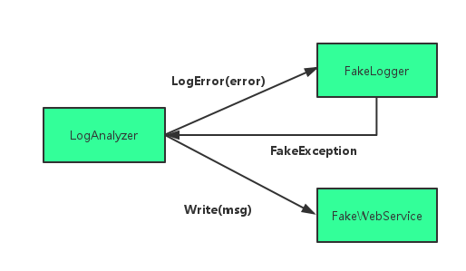
我们需要确保的是：如果日志对象抛出异常，LogAnalyzer 会把这个问题通知 WebService。下面是被测试类的代码：
1 2 3 4 5 6 7 8 9 10 11 12 13 14 15 16 17 18 19 20 21 22 23 24 25 26 27 28 29 30 31 32 33 34 35 36 public interface IWebService { void Write (string message } public class LogAnalyzerNew { private ILogger _logger; private IWebService _webService; public LogAnalyzerNew (ILogger logger, IWebService webService ) _logger = logger; _webService = webService; } public int MinNameLength { get ; set ; } public void Analyze (string fileName if (fileName.Length < MinNameLength) { try { _logger.LogError(string .Format("Filename too short : {0}" , fileName)); } catch (Exception ex) { _webService.Write("Error From Logger : " + ex.Message); } } } }
现在我们借助 NSubstitute 进行测试：
1 2 3 4 5 6 7 8 9 10 11 12 13 14 15 [Test ] public void Analyze_LoggerThrows_CallsWebService ( var mockWebService = Substitute.For<IWebService>(); var stubLogger = Substitute.For<ILogger>(); stubLogger.When(logger => logger.LogError(Arg.Any<string >())) .Do(info => { throw new Exception("fake exception" ); }); var analyzer = new LogAnalyzerNew(stubLogger, mockWebService); analyzer.MinNameLength = 10 ; analyzer.Analyze("short.txt" ); mockWebService.Received().Write(Arg.Is<string >(s => s.Contains("fake exception" ))); }
这里我们不需要手工实现伪对象，但是代码的可读性已经变差了，因为有一堆 Lambda 表达式，不过它也帮我们避免了在测试中使用方法名字符串。
小结 本篇我们学习了单元测试的核心技术：存根、模拟对象以及隔离框架。使用存根可以帮助我们破除依赖，模拟对象与存根的区别主要在于存根不会导致测试失败，而模拟对象则可以。要辨别你是否使用了存根，最简单的方法是：存根永远不会导致测试失败，测试总是对被测试类进行断言。使用隔离框架，测试代码会更加易读、易维护，重点是可以帮助我们节省不少时间编写模拟对象和存根。
参考资料 （1）Roy Osherove 著，金迎 译，《单元测试的艺术（第2版）》NSubsititue 完全手册 》单元测试模拟框架：NSubstitute 》
测试代码 上一篇我们学习单元测试和核心技术：存根、模拟对象和隔离框架，它们是我们进行高质量单元测试的技术基础。本篇会集中在管理和组织单元测试的技术，以及如何确保在真实项目中进行高质量的单元测试。
测试层次和组织 测试项目的两种目录结构 （1）集成测试和单元测试在同一个项目里，但放在不同的目录和命名空间里。基础类放在单独的文件夹里。
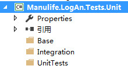
（2）集成测试和单元测试位于不同的项目中，有不同的命名空间。
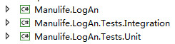
实践中推荐使用第二种目录结构，因为如果我们不把这两种测试分开，人们可能就不会经常地运行这些测试。既然测试都写好了，为什么人们不愿意按照需要运行它们呢？一个原因是：开发人员有可能懒得运行测试，或者没有实践运行测试。
构建绿色安全区 将集成测试和单元测试分开放置，其实就给团队的开发人员构建了绿色安全区，这个区只包含单元测试。
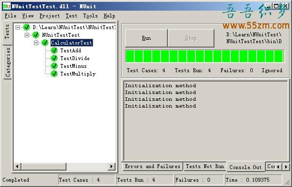
单元测试全部通过至少可以使开发人员对代码质量比较有信心，专注于提高编码效率。而且我们应该将测试自动化，编写每日构建脚本，并借助持续集成工具帮助我们自动执行这些脚本。
将测试类映射到被测试代码 （1）将测试映射到项目
（2）将测试映射到类
（3）将测试映射到具体的工作单元入口[UnitOfWorkName]_[ScenarioUnderTest]_[ExpectedBehavior]
UnitOfWorkName：被测试的方法、一组方法或者一组类Scenario：测试进行的假设条件，例如“登入失败”，“无效用户”或“密码正确”等ExpectedBehavior：在测试场景指定的条件下，你对被测试方法行为的预期
示例：IsValidFileName_BadExtension_ReturnsFalse， IsValidFileName_EmptyName_Throws 等
注入横切关注点 当需要处理类似时间管理、异常或日志的横切关注点时，使用它们的地方会非常多，如果把它们实现成可注入的，产生的代码会很容易测试，但却很难阅读和理解。这里我们来看一个例子，假设应用程序使用当前时间进行写日志，相关代码如下：
1 2 3 4 5 6 7 public static class TimeLogger { public static string CreateMessage (string info return DateTime.Now.ToShortDateString() + " " + info; } }
为了使这段代码容易测试，如果使用之前的依赖注入技术，那么我们需要创建一个 ITimeProvider 接口，还必须在每个用到DateTime的地方使用到这个接口。这样做非常耗时，实际上，还有更直接的方法解决这个问题。
Step1.
1 2 3 4 5 6 7 8 9 10 11 12 13 14 15 16 17 18 19 20 21 22 23 24 25 26 27 public class SystemTime { private static DateTime _date; public static void Set (DateTime custom ) _date = custom; } public static void Reset ( _date = DateTime.MinValue; } public static DateTime Now { get { if (_date != DateTime.MinValue) { return _date; } return DateTime.Now; } } }
阅读这段代码，其中有一个小技巧：SystemTime 类提供一个特殊方法 Set，它会修改系统中的当前时间，也就是说，每个使用这个 SystemTime 类的人看到的都是你指定的日期和时间。有了这样的代码，每个使用这个 SystemTime 类的人看到的都会是你指定的日期和时间。
Step2.
1 2 3 4 5 6 7 8 9 10 11 12 13 14 15 16 17 18 19 20 21 [TestFixture ] public class TimeLoggerTests { [Test ] public void SettingSystemTime_Always_ChangesTime ( SystemTime.Set(new DateTime(2000 , 1 , 1 )); string output = TimeLogger.CreateMessage("a" ); StringAssert.Contains("2000/1/1" , output); } [TearDown ] public void AfterEachTest ( SystemTime.Reset(); } }
在测试中，我们首先假定设置一个日期，然后进行断言。并且借助TearDown方法，确保当前测试不会改变其他测试的值。
Note： 这样做的好处就在于不用注入一大堆接口，我们所付出的代价仅仅在于在测试类中加入一个简单的[TearDown]方法，确保当前测试不会改变其他测试的值。
使用继承使测试代码可重用 推荐大家在测试代码中使用继承机制，通过实现基类，可以较好地展现面向对象的魔力。在实践中，一般有三种模式会被使用到：
（1）抽象测试基础结构类模式
1 2 3 4 5 6 7 8 9 10 11 12 13 14 15 16 17 18 19 20 21 22 23 24 25 26 27 28 29 30 31 32 33 34 35 36 37 38 39 [TestFixture ] public class BaseTestsClass { public ILogger FakeTheLogger ( LoggingFacility.Logger = Substitute.For<ILogger>(); return LoggingFacility.Logger; } [TearDown ] public void ClearLogger ( LoggingFacility.Logger = null ; } } [TestFixture ] public class LogAnalyzerTests : BaseTestsClass { [Test ] public void Analyze_EmptyFile_ThrowsException ( FakeTheLogger(); LogAnalyzer analyzer = new LogAnalyzer(); analyzer.Analyze("myemptyfile.txt" ); } }
使用此模式要注意继承最好不要超过一层，如果继承层数过多，不仅可读性急剧下降，编译也很容易出错。
（2）测试类类模板模式
1 2 3 4 5 6 7 8 9 10 11 12 13 14 15 16 17 18 19 20 21 22 23 24 25 26 27 28 29 30 31 32 33 34 35 36 37 38 39 40 41 42 43 44 45 46 47 48 49 [TestFixture ] public abstract class TemplateStringParserTests { [Test ] public abstract void TestGetStringVersionFromHeader_SingleDigit_Found ( [Test ] public abstract void TestGetStringVersionFromHeader_WithMinorVersion_Found ( [Test ] public abstract void TestGetStringVersionFromHeader_WithRevision_Found ( } [TestFixture ] public class XMLStrignParserTests : TemplateStringParserTests { protected IStringParser GetParser (string input return new XMLStringParser(input); } [Test ] public override void TestGetStringVersionFromHeader_SingleDigit_Found ( IStringParser parser = GetParser("<Header>1</Header>" ); string versionFromHeader = parser.GetTextVersionFromHeader(); Assert.AreEqual("1" , versionFromHeader); } [Test ] public override void TestGetStringVersionFromHeader_WithMinorVersion_Found ( IStringParser parser = GetParser("<Header>1.1</Header>" ); string versionFromHeader = parser.GetTextVersionFromHeader(); Assert.AreEqual("1.1" , versionFromHeader); } [Test ] public override void TestGetStringVersionFromHeader_WithRevision_Found ( IStringParser parser = GetParser("<Header>1.1.1</Header>" ); string versionFromHeader = parser.GetTextVersionFromHeader(); Assert.AreEqual("1.1" , versionFromHeader); } }
使用此模式可以确保开发者不会遗忘重要的测试，基类包含了抽象的测试方法，派生类必须实现这些抽象方法。
（3）抽象测试驱动类模式
1 2 3 4 5 6 7 8 9 10 11 12 13 14 15 16 17 18 19 20 21 22 23 24 25 26 27 28 29 30 31 32 33 34 35 36 37 38 39 40 41 42 43 44 45 46 47 48 49 50 51 52 53 54 55 56 57 58 59 60 61 62 63 64 public abstract class FillInTheBlankStringParserTests { protected abstract IStringParser GetParser (string input protected abstract string HeaderVersion_SingleDigit { get ; } protected abstract string HeaderVersion_WithMinorVersion { get ; } protected abstract string HeaderVersion_WithRevision { get ; } public const string EXPECTED_SINGLE_DIGIT = "1" ; public const string EXPECTED_WITH_MINORVERSION = "1.1" ; public const string EXPECTED_WITH_REVISION = "1.1.1" ; [Test ] public void TestGetStringVersionFromHeader_SingleDigit_Found ( string input = HeaderVersion_SingleDigit; IStringParser parser = GetParser(input); string versionFromHeader = parser.GetTextVersionFromHeader(); Assert.AreEqual(EXPECTED_SINGLE_DIGIT, versionFromHeader); } [Test ] public void TestGetStringVersionFromHeader_WithMinorVersion_Found ( string input = HeaderVersion_WithMinorVersion; IStringParser parser = GetParser(input); string versionFromHeader = parser.GetTextVersionFromHeader(); Assert.AreEqual(EXPECTED_WITH_MINORVERSION, versionFromHeader); } [Test ] public void TestGetStringVersionFromHeader_WithRevision_Found ( string input = HeaderVersion_WithRevision; IStringParser parser = GetParser(input); string versionFromHeader = parser.GetTextVersionFromHeader(); Assert.AreEqual(EXPECTED_WITH_REVISION, versionFromHeader); } } public class DBLogStringParserTests : GenericParserTests<DBLogStringParser> { protected override string GetInputHeaderSingleDigit ( return "Header;1" ; } protected override string GetInputHeaderWithMinorVersion ( return "Header;1.1" ; } protected override string GetInputHeaderWithRevision ( return "Header;1.1.1" ; } }
此模式在基类中实现测试方法，并提供派生类可以实现的抽象方法钩子 。当然，只是大部分的测试代码在基类中，派生类也可以加入自己的特殊测试。
此模式的要点在于：你不是具体地测试一个类，而是测试产品代码中的一个接口或者基类。
当然，在 .NET 中我们也可以通过泛型来实现此模式，例如下面的代码：
1 2 3 4 5 6 7 8 9 10 11 12 13 14 15 16 17 18 19 20 21 22 23 24 25 26 27 28 29 30 31 32 33 34 35 36 37 38 39 40 41 42 43 44 45 46 47 48 49 50 51 52 53 54 55 56 57 58 59 60 61 public abstract class GenericParserTests<T> where T : IStringParser // 01. 定义参数的泛型约束 { protected abstract string GetInputHeaderSingleDigit ( protected abstract string GetInputHeaderWithMinorVersion ( protected abstract string GetInputHeaderWithRevision ( protected T GetParser (string input return (T)Activator.CreateInstance(typeof (T), input); } [Test ] public void TestGetStringVersionFromHeader_SingleDigit_Found ( string input = GetInputHeaderSingleDigit(); T parser = GetParser(input); bool result = parser.HasCorrectHeader(); Assert.AreEqual(false , result); } [Test ] public void TestGetStringVersionFromHeader_WithMinorVersion_Found ( string input = GetInputHeaderWithMinorVersion(); T parser = GetParser(input); bool result = parser.HasCorrectHeader(); Assert.AreEqual(false , result); } [Test ] public void TestGetStringVersionFromHeader_WithRevision_Found ( string input = GetInputHeaderWithRevision(); T parser = GetParser(input); bool result = parser.HasCorrectHeader(); Assert.AreEqual(false , result); } } public class DBLogStringParserTests : GenericParserTests<DBLogStringParser> { protected override string GetInputHeaderSingleDigit ( return "Header;1" ; } protected override string GetInputHeaderWithMinorVersion ( return "Header;1.1" ; } protected override string GetInputHeaderWithRevision ( return "Header;1.1.1" ; } }
优秀单元测试的支柱 要编写优秀的单元测试，它们应该同时具有 可靠性 、可维护性 及 可读性 。
编写可靠的测试 一个可靠的测试能让你觉得自己对事态了如指掌，能够从容应对。以下是一些指导原则和技术：
（1）决定何时删除或修改测试产品缺陷、测试缺陷、语义或者API更改或者是由于冲突或无效测试 ，我们需要修改和删除测试代码。
（2）避免测试中的逻辑
switch、if或else语句；foreach、for或while循环；
这种做法不值得推荐，因为这样的测试可读性较差，也比较脆弱。通常来说，一个单元测试应该是一系列方法的调用和断言，但是不包含控制流程语句，甚至不应该将断言语句放在try-catch中。
（3）只测试一个关注点
（4）把单元测试和集成测试分开
（5）用代码审查确保代码覆盖率
编写可维护性的测试 可维护性是大多数开发者在编写单元测试时面对的核心问题之一。为此我们需要：
测试隔离的基本概念是：一个测试应该总是在它自己的小世界中运行，与其他类似或不同的工作的测试隔离，甚至不知道其他测试的存在。
编写可读性的测试 不可读的测试几乎没有任何意义，它是我们向项目的下一代开发者讲述的故事，帮助开发者理解一个应用程序的组成及其开端。
（2）变量命名
1 2 3 4 5 6 7 8 9 10 11 12 13 14 15 16 17 18 [Test ] public void BadlyNameTest ( LogAnalyzer log = new LogAnalyzer(); int result = log.GetLineCount("abc.txt" ); Assert.AreEqual(-100 , result); } [Test ] public void GoodNameTest ( LogAnalyzer log = new LogAnalyzer(); int result = log.GetLineCount("abc.txt" ); const int COULD_NOT_READ_FILE = -100 ; Assert.AreEqual(-COULD_NOT_READ_FILE, result); }
经过改进后，我们会很容易理解这个返回值的意义。
（3）有意义的断言
（4）断言和操作分离
1 2 Assert.AreEqual(-COULD_NOT_READ_FILE, log.GetLineCount("abc.txt" ));
小结 这一篇我们学习了：
尽量将测试自动化，尽可能多次地运行测试，尽可能持续地进行产品交付；
把集成测试和单元测试分开，为整个团队构建一个绿色安全区，该区域中所有的测试都必须通过；
按照项目和类型组织测试，把测试分别放在不同的目录、文件夹或者命名空间中；
使用测试类层次，对一个层次中相关的几个类进行同一组测试，或者对共享一个通用接口或者基类的类型进行同一组测试；
优秀单元测试具有三大支柱：可读性、可维护性与可靠性，它们相辅相成。
如果人们能读懂你的测试，就能理解和维护测试，如果测试能够通过，它们也会信任测试。一旦实现这个目标，你就能知道系统是否正常工作，具有了处理变更和在需要时修改代码的能力；
本系列文章的示例代码：点此下载
参考资料 （1）Roy Osherove 著，金迎 译，《单元测试的艺术（第2版）》

{kind=link}
{kind=link}
{kind=link}
{kind=link}
{kind=link}
{kind=link}
{kind=link}
{kind=link}
{kind=link}
{kind=link}
{kind=link}
{kind=link}
{kind=link}
{kind=link}
{kind=link}
{kind=link}
{kind=link}
{kind=link}
{kind=link}
{kind=link}
{kind=link}
{kind=link}
{kind=link}
{kind=link}
{kind=link}
{kind=link}
{kind=link}
{kind=link}
{kind=link}
{kind=link}
{kind=link}
{kind=link}
{kind=link}